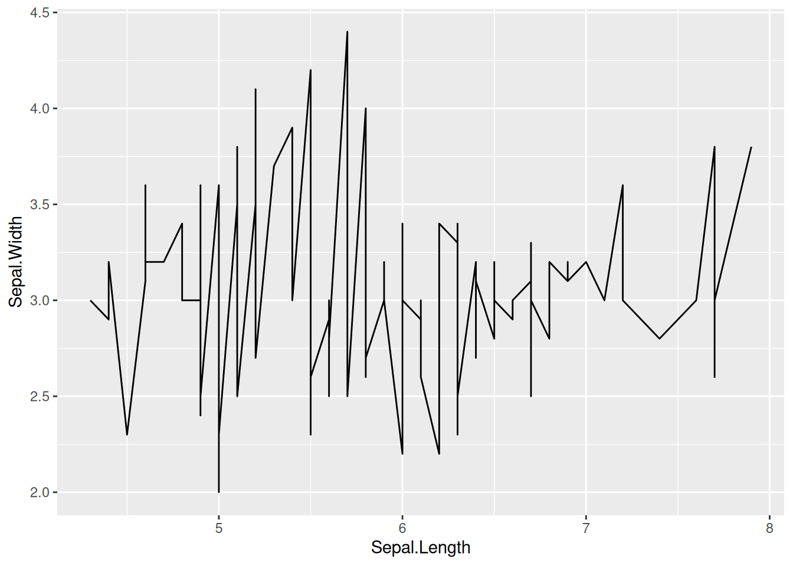
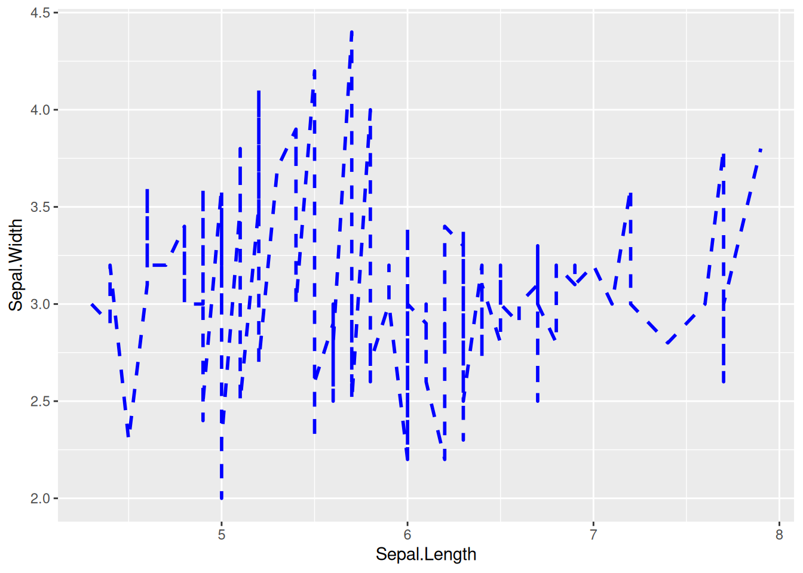
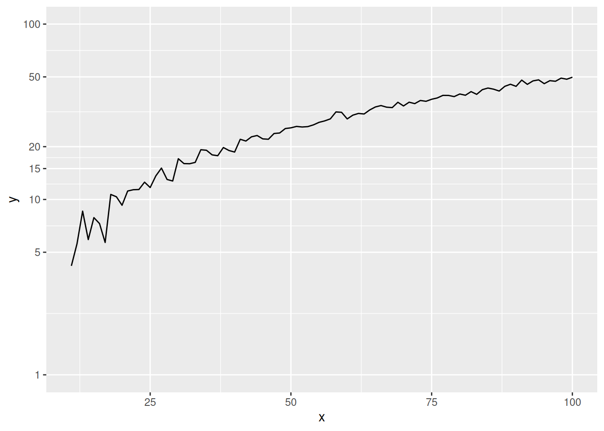
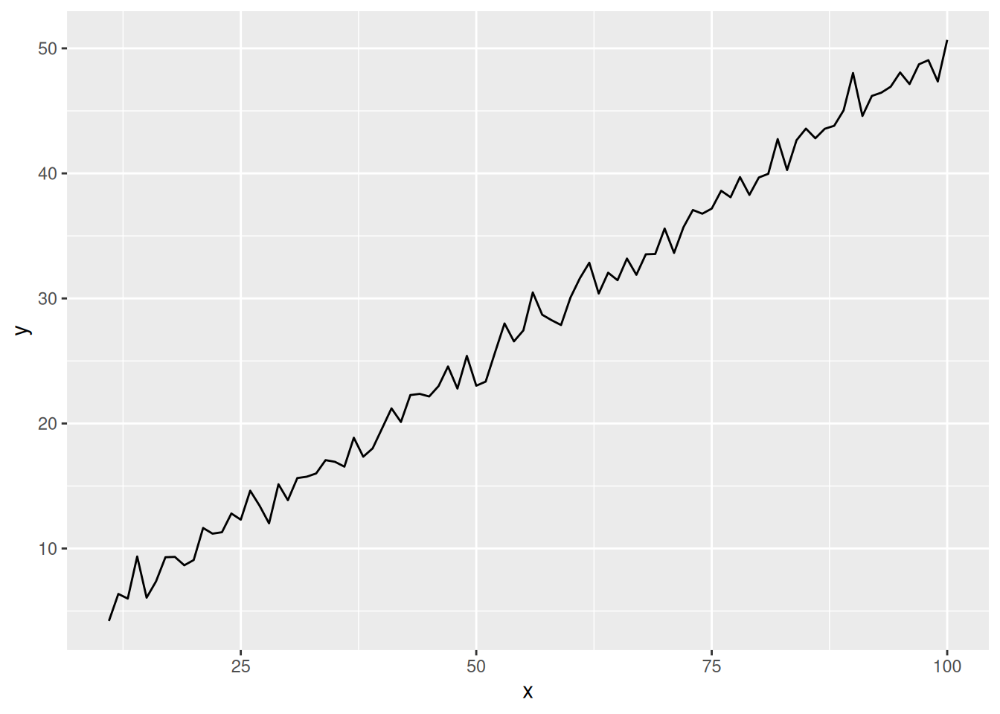
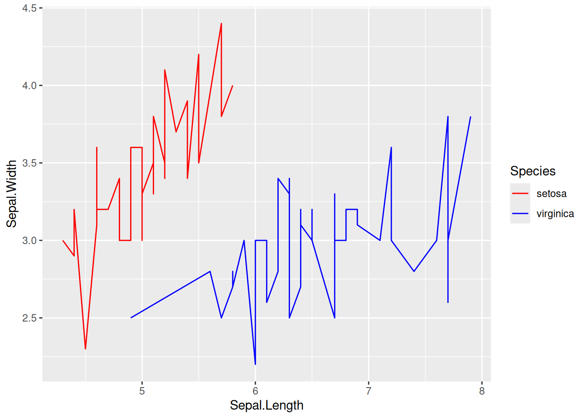
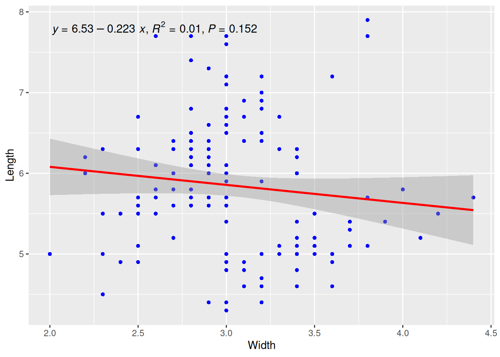
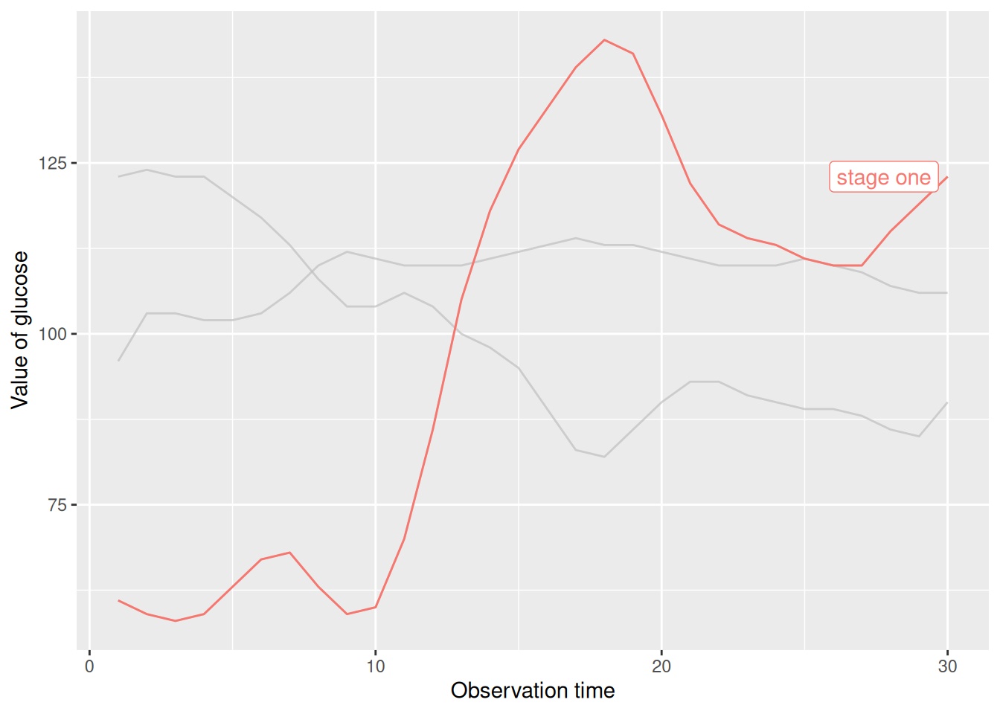
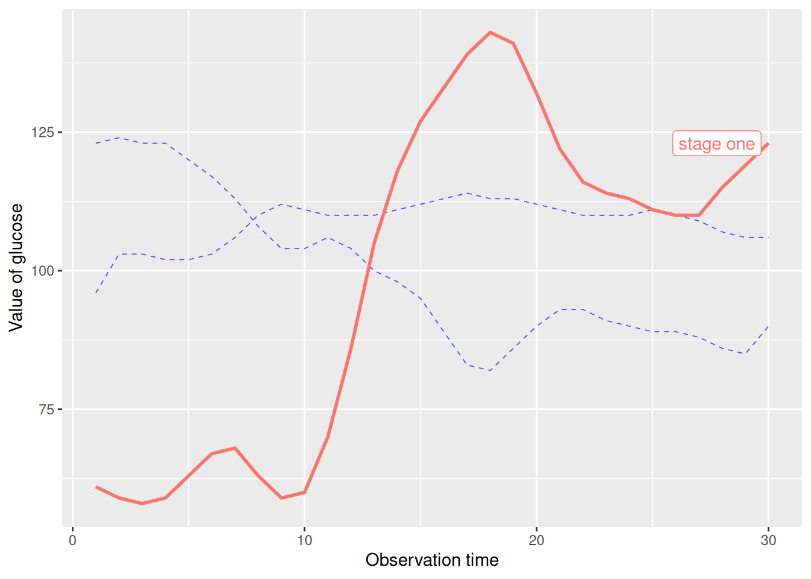
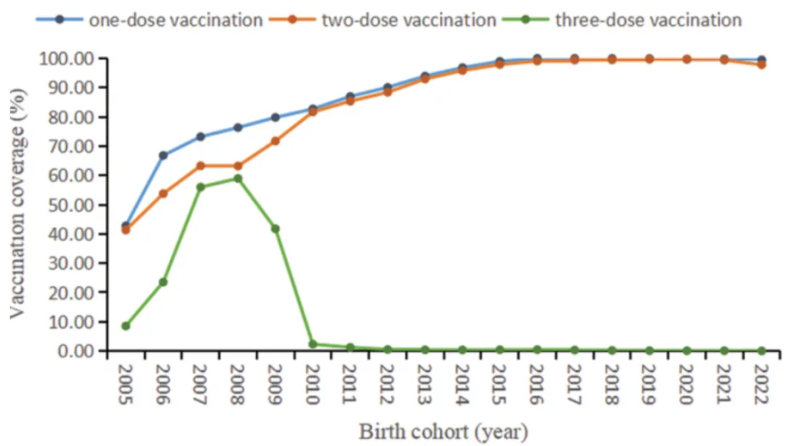
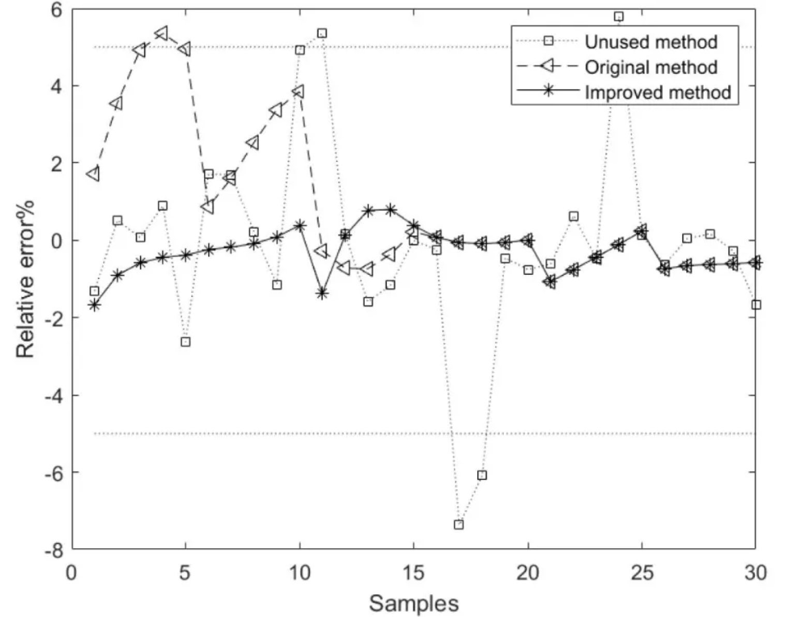

# 安装包
if (!requireNamespace("ggplot2", quietly = TRUE)) {
install.packages("ggplot2")
}
if (!requireNamespace("viridis", quietly = TRUE)) {
install.packages("viridis")
}
if (!requireNamespace("patchwork", quietly = TRUE)) {
install.packages("patchwork")
}
if (!requireNamespace("gghighlight", quietly = TRUE)) {
install.packages("gghighlight")
}
if (!requireNamespace("ggpmisc", quietly = TRUE)) {
install.packages("ggpmisc")
}
if (!requireNamespace("dplyr", quietly = TRUE)) {
install.packages("dplyr")
}
# 加载包
library(ggplot2)
library(viridis)
library(patchwork)
library(gghighlight)
library(ggpmisc)
library(dplyr)线性图
在各类图表中绘制线段是常见的，该模块将绘制各种可能用到的线段。
示例

如图是一个基础的线性图，能直观得表示因变量随自变量的走向。
环境配置
系统要求： 跨平台（Linux/MacOS/Windows）
编程语言：R
依赖包：
ggplot2,viridis,patchwork,gghighlight,ggpmisc
数据准备
使用R语言内置的iris数据集和economics数据集，和自定义的数据集，以及PhysioNet数据库中的葡萄糖值实时测量数据 [1]。
# 1.iris数据
data <- iris
head(data) Sepal.Length Sepal.Width Petal.Length Petal.Width Species
1 5.1 3.5 1.4 0.2 setosa
2 4.9 3.0 1.4 0.2 setosa
3 4.7 3.2 1.3 0.2 setosa
4 4.6 3.1 1.5 0.2 setosa
5 5.0 3.6 1.4 0.2 setosa
6 5.4 3.9 1.7 0.4 setosa# 2.economics数据
# （1）直接使用economics数据绘制图形
# （2）economics数据处理后用于绘制时序图
data_economics <- economics[,c(1, 4, 5)] %>%
filter(grepl("-12-01", date)) %>% # 只选择12月数据进行绘图
mutate(date = gsub("-.*", "", date)) %>% # 只保留年份
slice(1:25) %>% # 选择前25年
arrange(date) # 排序
head(data_economics)# A tibble: 6 × 3
date psavert uempmed
<chr> <dbl> <dbl>
1 1967 11.8 4.8
2 1968 11.1 4.4
3 1969 11.8 4.6
4 1970 13.2 5.9
5 1971 13 6.2
6 1972 13.7 6.1# 3.自动生成数据(用于y轴的log转换)
data_create <- data.frame(
x = seq(11, 100),
y = seq(11, 100) / 2 + rnorm(90)
)
head(data_create) x y
1 11 5.911565
2 12 4.773905
3 13 5.936463
4 14 6.711957
5 15 7.993736
6 16 7.668363# 4.葡萄糖值(用于强调特定线段部分)
data_glucose <- read.csv("https://bizard-1301043367.cos.ap-guangzhou.myqcloud.com/Dexcom_001.csv", header = T)
# 葡萄糖值的数据处理
data_glucose <- data_glucose[,c(2, 8)] %>%
slice(1:102) %>%
setNames(c("V1", "V2")) %>%
filter(!is.na(V2) & V1 != "") %>% # 去除na
mutate(V3 = rep(1:30, times = 3), # 分为3个阶段
group = rep(c("stage one", "stage two", "stage three"), each = 30))
head(data_glucose) V1 V2 V3 group
1 2020/2/13 17:23 61 1 stage one
2 2020/2/13 17:28 59 2 stage one
3 2020/2/13 17:33 58 3 stage one
4 2020/2/13 17:38 59 4 stage one
5 2020/2/13 17:43 63 5 stage one
6 2020/2/13 17:48 67 6 stage one可视化
1. 基本绘图
# 基本绘图
p <- ggplot(data, aes(x = Sepal.Length, y = Sepal.Width)) +
geom_line()
p

这个图是线性图的基本形式，在ggplot中调用geom_line()即可绘制。
2. 更改线样式
# 更改线样式
p <- ggplot(data, aes(x = Sepal.Length, y = Sepal.Width)) +
geom_line(orientation = "x", linewidth = 1, color = "blue", linetype = 2)
p
这个图可通过设置linewidth、color、linetype更改线样式。
提示
关键参数: geom_line
-
linetype: 表示线的类型，可选项范围0-6(其中0 = blank, 1 = solid, 2 = dashed, 3 = dotted, 4 = dotdash, 5 = longdash, 6 = twodash)，具体形状如下图：

orientation: 线段的朝向，可选项有”x”，“y”，orientation=“x”是以x为自变量，y为因变量绘制。linewidth: 线段的粗细。
3. y轴刻度log化
# y轴log化
p <- ggplot(data_create, aes(x = x, y = y)) +
geom_line() +
scale_y_log10(breaks = c(1, 5, 10, 15, 20, 50, 100), limits = c(1, 100))
p
这个图可以看到y轴的刻度并不是等间距分布，而是log化了，它放大了曲线的下部。
提示
关键参数: scale_y_log10
breaks：可以用一组数值向量表示y轴刻度的位置。limits：可以用长度为2的数值向量表示y轴刻度的范围。
# y轴log化前(做对照)
p <- ggplot(data_create, aes(x = x, y = y)) +
geom_line()
p
这个图是没有进行y轴log化的图（为了对比），可以看到刻度是均匀分布的。
4. 多类数据绘图
# 多类数据绘图
p <- ggplot(data[data$Species != "versicolor", ], aes(x = Sepal.Length, y = Sepal.Width)) +
geom_line(aes(color = Species)) # 将物种变量映射到颜色特征上
p
这个图使用了iris数据集的两个物种进行绘图。
5. 颜色选择
5.1 使用viridis包
# 多类数据绘图
# 多类数据绘图+使用`viridis`包
p <- ggplot(data[data$Species != "versicolor", ], aes(x = Sepal.Length, y = Sepal.Width)) +
geom_line(aes(color = Species)) +
scale_color_viridis(discrete = TRUE)
p
这个图使用viridis包的scale_color_viridis函数选择合适的颜色。
5.2 自定义颜色
# 使用`scale_color_manual()`自定义颜色
p <- ggplot(data[data$Species != "versicolor", ], aes(x = Sepal.Length, y = Sepal.Width)) +
geom_line(aes(color = Species)) +
scale_color_manual(values = c("red","blue"))
p
这个图使用scale_color_manual()自定义折线为红蓝双色。
6. 连接散点图中的线段
连接散点图中也包含线段。
6.1 基本绘图+线样式
# 基本绘图+线样式
p <- ggplot(data[data$Species == "setosa", ], aes(x = Sepal.Width, y = Sepal.Length)) +
geom_point(shape = 17, size = 1.5, color = "blue") +
geom_line(size = 1, color = "black", linetype = 2)
p
这个图是基本的连接散点图，使用geom_point()绘制点，geom_line()绘制线段。
6.2 按时序连线
# 按照时序连线
p <- ggplot(data_economics, aes(x = psavert, y = uempmed)) +
geom_point(shape = 17, size = 1.5, color = "blue") +
geom_text(
label = data_economics$date, nudge_x = 0,
nudge_y = -0.1, size = 5
) +
# 使用`geom_segment()`绘制线段
geom_segment(
aes(
xend = c(tail(psavert, n = 24), NA),
yend = c(tail(uempmed, n = 24), NA)
),
linewidth = 1
)
p
这个图使用geom_segment()实现按照时序进行点的连线，和geom_line()绘制的图差别较大。
提示
关键参数: geom_segment
xend/yend：与x,y相对应，也就是(x,y)指向(xend,yend)绘制线段。代码中c(tail(psavert, n=24),NA)是取psavert列的后面24个值，并加上了一个NA。这样就使前面的点指向后面一个点绘制线段，最后的点指向NA，不绘制线段。
6.3 时序连线+箭头
# 时序连线+箭头
p <- ggplot(data_economics, aes(x = psavert, y = uempmed)) +
geom_point(shape = 17, size = 1.5, color = "blue") +
geom_text(
label = data_economics$date, nudge_x = 0,
nudge_y = -0.1, size = 5
) +
# 使用`geom_segment()`绘制线段
geom_segment(
aes(
xend = c(tail(psavert, n = 24), NA),
yend = c(tail(uempmed, n = 24), NA)
),
linewidth = 1, arrow = arrow(length = unit(0.5, "cm"))
)
p
这个图为每个连线添加了箭头，使连接散点图中的时序特征更加明显。
7. 绘制回归曲线
7.1 回归曲线
## 回归曲线
p <- ggplot(data, aes(x = Sepal.Width, y = Sepal.Length)) +
geom_point(shape = 16, size = 1.5, color = "blue") +
labs(x = "Width", y = "Length") +
geom_smooth(method = "lm", formula = y ~ x, se = F, color = "red") # 绘制线性回归曲线
p
这个图在散点图的基础上绘制了回归曲线。
7.2 回归曲线+置信区间
# 回归曲线+置信区间
p <- ggplot(data, aes(x = Sepal.Width, y = Sepal.Length)) +
geom_point(shape = 16, size = 1.5, color = "blue") +
labs(x = "Width", y = "Length") +
geom_smooth(method = "lm", formula = y ~ x, se = T, color = "red") # 绘制线性回归曲线
p
这个图在回归曲线上添加置信区间(即参数se=TRUE)。
7.3 添加回归曲线标签
#通过`stat_poly_eq()`添加回归曲线标签
p <- ggplot(data, aes(x = Sepal.Width, y = Sepal.Length)) +
geom_point(shape = 16, size = 1.5, color = "blue") +
labs(x = "Width", y = "Length") +
geom_smooth(method = "lm", formula = y ~ x, se = T, color = "red") + # 绘制线性回归曲线
stat_poly_eq(use_label("eq","R2","P"),formula = y~x,size = 4,method = "lm")
p
这个图使用ggpmisc包的stat_poly_eq()添加了回归曲线方程、R方和P值。
8. 注释和分割线
# 注释和分割线
p <- ggplot(data = economics[1:60, c(1, 4)], aes(x = date, y = psavert)) +
geom_line() +
xlab("") +
scale_x_date(date_breaks = "3 months", date_labels = "%Y-%m") +
# 文本注释
annotate(
geom = "text", x = as.Date("1969-01-01"), y = 14.5,
label = "the enconomics of USA"
) +
# 调整x坐标轴文本角度
theme(axis.text.x = element_text(angle = 60, hjust = 1)) +
# 点注释
annotate(geom = "point", x = as.Date("1971-06-01"), y = 14.7, size = 5, shape = 21, fill = "transparent") +
# 绘制水平分割线
geom_hline(yintercept = 14, color = "orange")
p
这个图使用了annotate做了点和文本的注释，并用geom_hline绘制了水平分割线。
9. 多子图排列
多子图排列，要用到patchwork包。
# 多子图排列（需要`patchwork`包）
data_double <- economics[1:60, c(1, 4, 5)]
p <- ggplot(data_double, aes(x = date, y = psavert)) +
geom_line() +
xlab("")
p1 <- ggplot(data_double, aes(x = date, y = uempmed)) +
geom_line() +
xlab("")
p + p1
这个图在一张图中显示了两张子图，图片的排列要用到patchwork包。
10. 双y轴
# 双y轴
data_double <- economics[1:60, c(1, 4, 5)]
p <- ggplot(data_double, aes(x = date)) +
geom_line(aes(y = psavert), color = "red") +
geom_line(aes(y = uempmed * 3), color = "blue") + # 为适应左y轴的范围，右y轴的值要扩大相应倍数
xlab("") +
scale_y_continuous(
name = "psavert",
sec.axis = sec_axis(transform = ~ . / 3, name = "uempmed") # 坐标轴的刻度要减少相应倍数
) +
theme(
axis.title.y = element_text(color = "red", size = 13),
axis.title.y.right = element_text(color = "blue", size = 13),
legend.position = "none"
)
p
这个图有着两个不同的y轴，上面的刻度可以不同。
11. 线形图+直方图
# 线形图+直方图
data_double <- economics[1:60, c(1, 4, 5)]
p <- ggplot(data_double, aes(x = date)) +
geom_bar(aes(y = psavert), stat = "identity", fill = "#69b3a2") + # 绘制条形图
geom_line(aes(y = uempmed * 3), color = "blue") + # 绘制线形图
xlab("") +
scale_y_continuous(
name = "psavert",
sec.axis = sec_axis(transform = ~ . / 3, name = "uempmed")
) +
theme(
axis.title.y = element_text(color = "#69b3a2", size = 13),
axis.title.y.right = element_text(color = "blue", size = 13),
legend.position = "none"
)
p
这个图的左y轴是直方图坐标轴，右y轴是线形图的坐标轴。
12. 强调特定线段
选取了部分葡萄糖的观测数据，并分成3个阶段进行绘图，用作强调线段这一部分的原始数据。
# 强调特定线段(需要使用到gghighlight包)
p <- ggplot(data_glucose) +
geom_line(aes(V3, V2, color = group)) +
gghighlight(max(V2) > 125, label_key = group) +
xlab("Observation time") +
ylab("Value of glucose")
p
这个图通过筛选条件强调了第一阶段的折线。
淡化特定线段
# 通过unhighlighted_params参数淡化特定线段
p <- ggplot(data_glucose) +
geom_line(aes(V3, V2, color = group), linewidth = 1) +
gghighlight(max(V2) > 125, label_key = group,
unhighlighted_params = list(
linewidth = 0.3,
colour = alpha("blue", 0.7),
linetype = "dashed"
)
) +
xlab("Observation time") +
ylab("Value of glucose")
p
这个图通过unhighlighted_params参数修改淡化折线格式。
应用场景

图中显示了2005年至2022年出生队列中不同剂量含腮腺炎疫苗的覆盖率。[1]

图中显示了基于未使用、原始和改进方法的模型方法相应的相对误差曲线， 其中基于改进方法的成分含量模型的平均相对误差优于基于未使用和原始方法的模型。[2]

图中（A） HCC患者合并症数量的分布。（B） 不同年龄和性别的HCC患者的平均合并症数量。（C）各年龄组男性HCC患者合并症数量的分布。（D） 各年龄组女性HCC患者合并症数量的分布。[3]
参考文献
[1] FU C, XU W, ZHENG W, et al. Epidemiological characteristics and interrupted time series analysis of mumps in Quzhou City, 2005-2023[J]. Hum Vaccin Immunother, 2024,20(1): 2411828.
[2] LU R, LIU H, YANG H, et al. Multi-Delay Identification of Rare Earth Extraction Process Based on Improved Time-Correlation Analysis[J]. Sensors (Basel), 2023,23(3).
[3] MU X M, WANG W, JIANG Y Y, et al. Patterns of Comorbidity in Hepatocellular Carcinoma: A Network Perspective[J]. Int J Environ Res Public Health, 2020,17(9).